★Edisonのセットアップ¶


早速、Edisonのセットアップを始めていきます。 以下の組み合わせの場合を想定して説明を行っていきます。
- Edison本体 + BreakoutBoard
- Edison本体 + Arduinoベースボード
- Edison本体 + (株)秋月電子通商 Edison用変換基板
また、MacやLinuxでのセットアップをご希望の際は、以下のリンクで別に記載しております。
（現在、準備中です。もう少々お待ちください。）
- 必要なもの
Edison本体 + BreakoutBoardで始める際
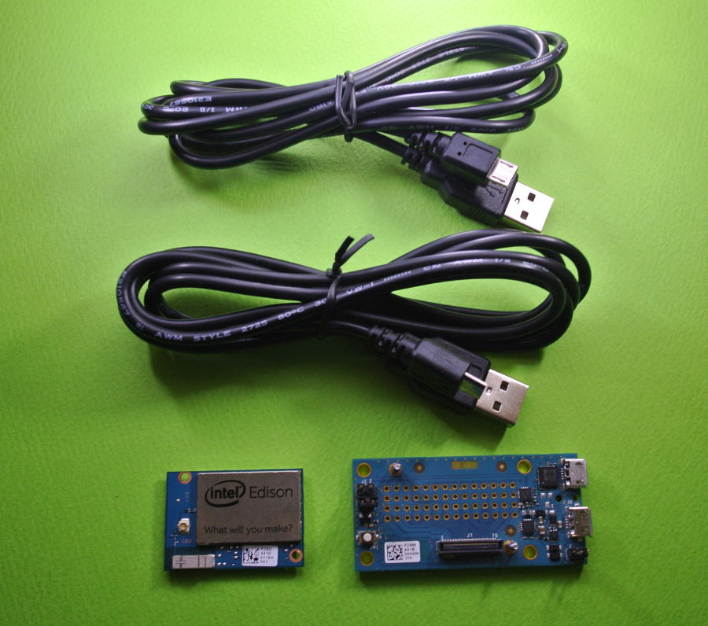- Edison+BreakoutBoard: １台
- USB-MicroB: ２本
Edison本体 + Arduinoベースボードで始める際
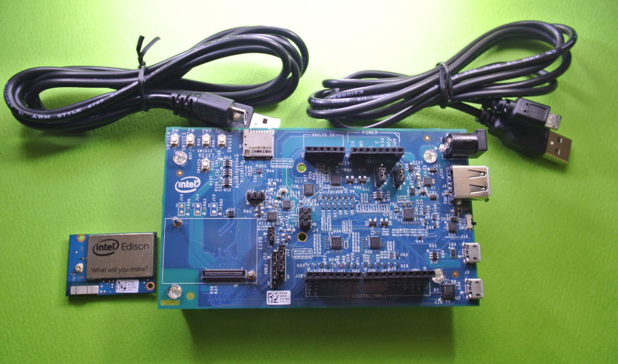- Edison+ArduinoBoard: １台
- USB-MicroB: ２本
- 箱からEdisonを取り出し、開封します
ベースボード組み立て
ベースボードとEdison本体をネジで固定します。ネジを無くさないように注意してください。
Edison本体 + BreakoutBoardの場合
Edison本体 + Arduinoベースボードの場合

USBの接続
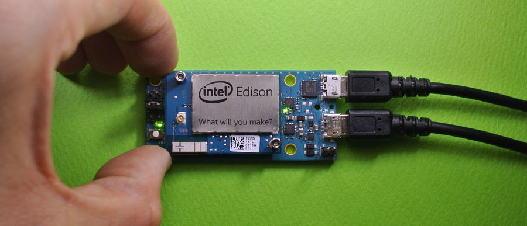 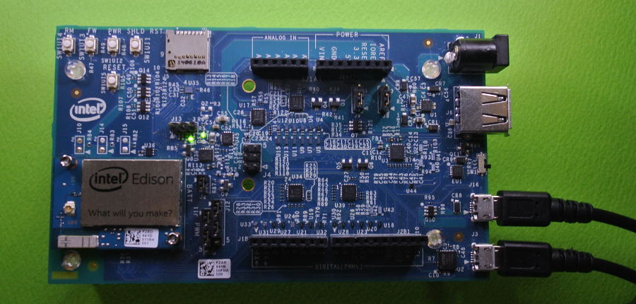ベースボードにある二箇所のUSBにケーブルを接続し、PCにつなげます。
片方はLinuxのコンソールとして働き、もう片方は電源とUSBメモリとして働きます。
Arduinoベースボードは、USB側にSWがあり、マイクロB側にSWを移動してください。
起動の確認
ベースボードに付いているLEDが点灯すればOK。
PC側では少し時間が経つとEdisonというUSBメモリが認識されます。
ドライバーや開発環境、ファームウェアのアップデート等のインストール
https://software.intel.com/en-us/iot/hardware/edison/downloads
URLよりダウンロードページに行き、
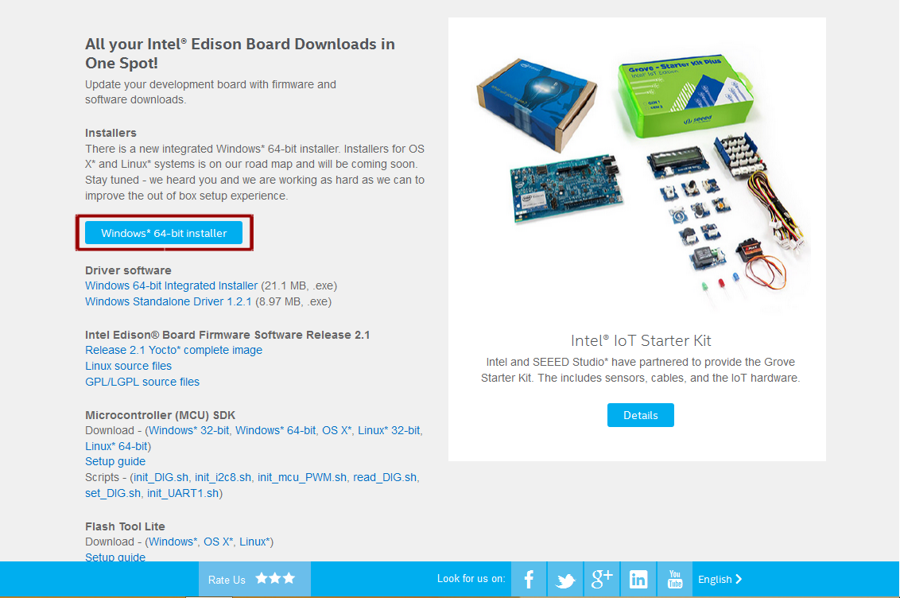丸線で囲まれた箇所をクリックして必要なファイルをダウンロードします。
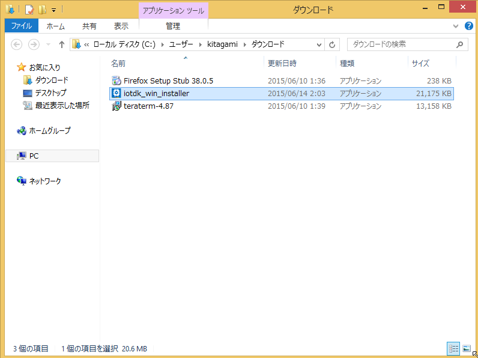ダウンロードが完了したら、exeファイルを実行します。
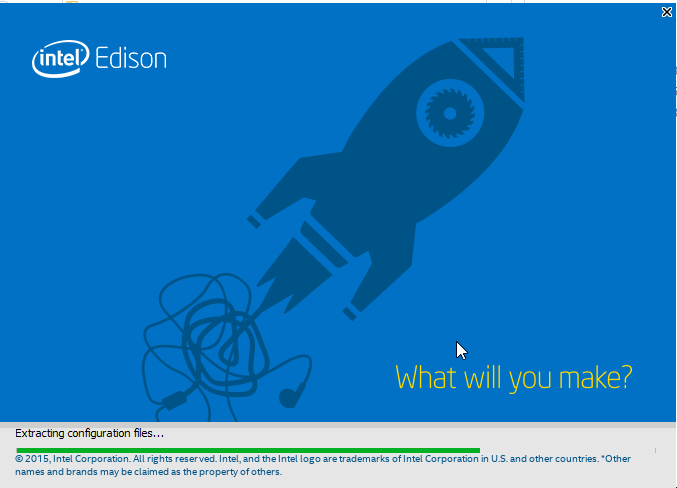写真の様な画面になれば、少し時間をまち、
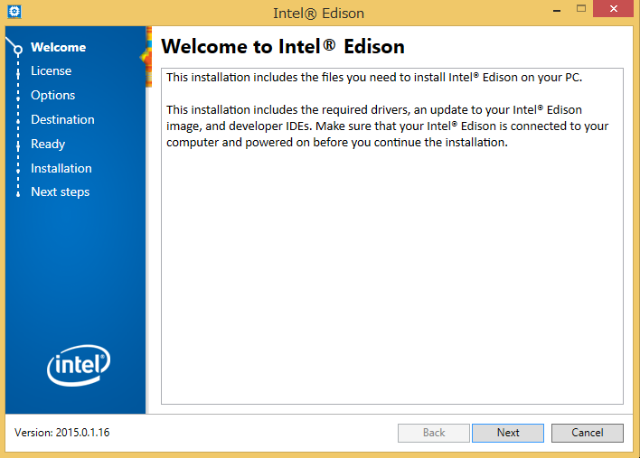で、Nest
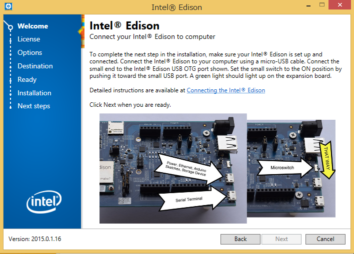写真のような画面になれば、次のUSBの接続を行ってください。
EdisonとPCとの接続に問題がなければ、この画面は表示されません。
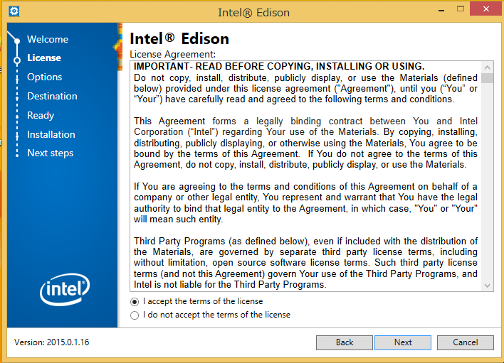「I accept the terms of the license」を選択し、Next
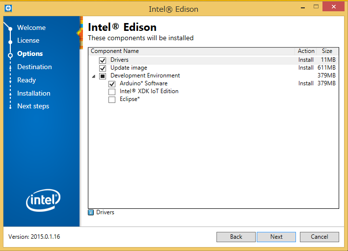デフォルトのままで問題ありませんので、このままNext
もし、興味がある項目があれば選択してNext。ただしファイル量が増えるためダウンロードに時間がかかります。
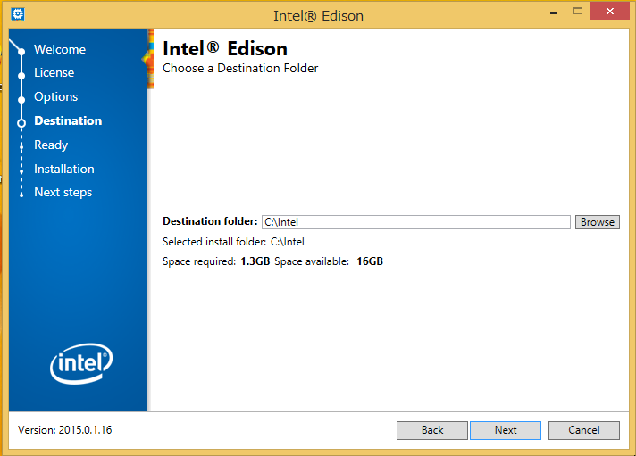保存先と保存領域の確認。特に問題がなければこのままNextを。
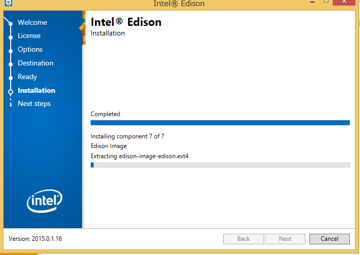ダウンロードが始まります。（約３０分間お待ちください）
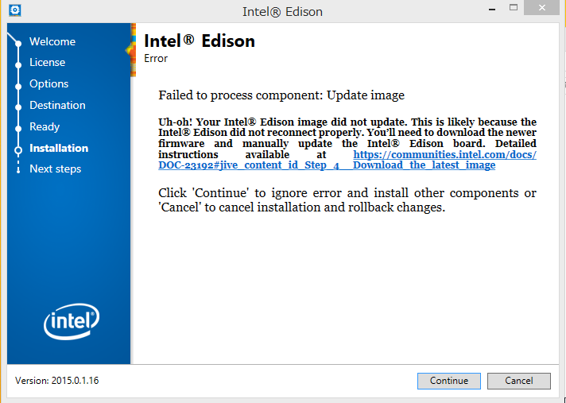ダウンロード後、以下の画面になれば無事に成功です。
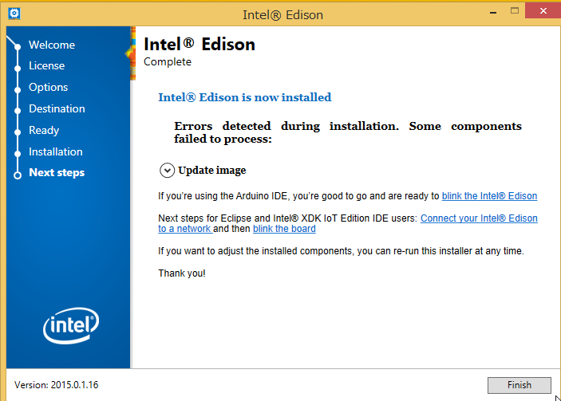ちなみに、この時点でEdisonは自動的に最新になりました。
お疲れ様でした。インストール完了です。
★ 次のセットアップへ

{kind=link}
{kind=link}
{kind=link}
{kind=link}
{kind=link}
{kind=link}
{kind=link}
{kind=link}
{kind=link}
{kind=link}
{kind=link}
管理情報¶
| 初版: | 2015/06/18 Rev2用に執筆 |
|---|---|
| 作成者: | Yuta kitagami |
| 連絡先: | kitagami@artifactnoise.com |
| twitter: | @nonNoise |